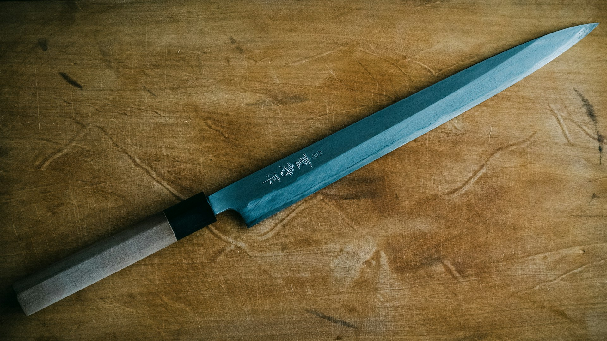

Knife Types

Chef's Knife (8–10")
The workhorse of the kitchen — handles 90% of kitchen tasks. Wide, curved blade allows a rocking motion. The German style curves from tip to heel; French style is straighter. Use for: chopping vegetables, mincing herbs, slicing meat, dicing onions. The first knife anyone should buy.

Paring Knife (3–4")
Small, nimble blade for intricate work. Peeling fruit, deveining shrimp, hulling strawberries, scoring meat, segmenting citrus. Held in-hand (not on board) for many tasks. Two types: bird's beak (curved for turning/peeling) and standard straight. Essential second knife after the chef's knife.

Bread Knife (8–10", serrated)
Serrated edge grips and saws through hard crusts without crushing soft interiors. Never needs sharpening (and is nearly impossible to sharpen at home). Also excellent for: slicing tomatoes, cakes, melon. The teeth do the work — apply light forward pressure rather than pressing down. A overlooked multi-purpose knife.

Boning Knife (5–6.5")
Flexible blade curves around bones to separate meat cleanly. Narrow profile slides between bones and joints. Stiff version for beef and pork; flexible version for fish and poultry. The flex allows the blade to follow bone contours. Essential for breaking down whole chickens, lamb racks, and pork loins.

Filleting Knife (6–9")
Very thin, very flexible blade designed to glide along fish bones with minimal waste. More flexible than a boning knife. The flex allows the blade to lay flat along the fish skeleton. Right-handed vs left-handed versions exist. Running the blade from tail to head against the backbone yields clean fillets.

Santoku (5–7")
Japanese all-purpose knife. "San" = three virtues: meat, fish, vegetables. Shorter and lighter than a chef's knife; flatter blade profile means more push-cut than rock-cut. Hollow-ground dimples (Granton edge) reduce friction and sticking. Excellent for thin slicing. Growing in popularity in Western kitchens.

Nakiri (5–7")
Japanese vegetable knife with a flat, rectangular blade. The completely flat edge and straight tip make it perfect for chopping vegetables in a guillotine-like up-and-down motion. No tip work; no rocking. Thin, double-bevel blade. The usuba is the single-bevel professional version. Superb for cabbage, leeks, and daikon.

Yanagiba / Sashimi (10–13")
Single-bevel, long, thin Japanese knife for slicing raw fish. The single bevel creates an asymmetric edge that produces paper-thin slices with a single drawing stroke (hikizukuri). The hollow back face reduces suction, allowing slices to fall away cleanly. Never used for any other task. Mastery requires years of practice.

Cleaver (6–9")
Heavy, rectangular blade for chopping through bone and hard vegetables. Chinese chef's cleaver is thinner and used for all-purpose tasks (not bone chopping). Western-style heavy cleaver splits through chicken bones and lobster. Never use a thin vegetable cleaver on bone — it can chip. The flat of the blade is used to crush garlic.